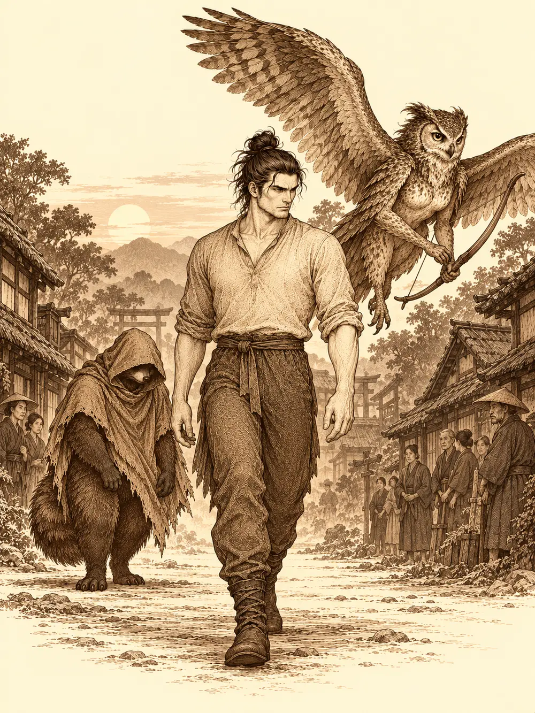

Capítulo 30
Limpiar las cañerías
Libro II · El favor del shogun
Llegaron a Ukio a las siete de la tarde, con el sol bajo y el polvo del camino pegado a las botas. Eran tres, y no se parecían en nada. Delante iba un hombre de piel muy pálida, casi translúcida, que lo miraba todo con una atención minuciosa, como si fuera tomando notas de la anatomía de cada persona con la que se cruzaba. A su lado volaba a ratos y a ratos caminaba una mujer con arco, cara y plumas de lechuza, que no se fiaba de nada. Y un poco atrás, encogido bajo una capucha que le tapaba el hocico, un tanuki de pelaje oscuro.
El pueblo olía a tierra regada. Había campos de cultivo con algunas manchas negras de un incendio reciente y un estanque donde nadaban peces rojos y blancos. Los vecinos que recogían las herramientas los saludaban con respeto.
"Buenas tardes, cazadores".
El hombre pálido se detuvo junto a uno.
"Disculpe. ¿Cazadores de qué?".
"De yokai, señor. ¿No es usted uno, con esas pintas de guerrero?".
Se llamaba Maroxi, y venía de muy lejos; tan lejos que no sabía qué era un yokai. El aldeano se lo explicó con paciencia: había criaturas que ayudaban, como los baku, que tenían forma de elefante nebuloso y protegían de las pesadillas, y otras malvadas, como unas de brazos muy largos que robaban. Al decirlo, el aldeano se fijó en el tanuki, que se había puesto tenso, y señaló hacia él.
"Parece que viajan ustedes con uno".
"Unos seres lo tenían atrapado por un malentendido", contestó Maroxi. "Mi compañera y yo le ayudamos a salir. A cambio, él nos ha traído a un sitio seguro".
La mujer lechuza se llamaba Erk. El tanuki, Ikari. Había cumplido su palabra trayéndolos hasta allí, y ahora buscaba otra cosa: noticias de su aldea.
De una esquina salió algo pequeño que se estampó contra las piernas de Maroxi.
"¡Ay! Me has hecho daño".
Era una niña con dos trenzas enormes, una armadura de cuero que le quedaba grande, ajustada con cordeles que se había puesto ella misma, dos espadas cortas que para ella eran casi largas y una espada de madera reforzada con trozos de acero. Miró a Maroxi de arriba abajo, luego miró a Erk, y se le pusieron los ojos como platos. Echó a correr hacia Erk señalándola, y Erk alzó el vuelo tres o cuatro metros, por si acaso.
"¡Yo conozco a alguien como tú! ¡A Hayate!".
Erk bajó hasta quedarse cara a cara con ella. La niña le preguntó si era cazadora, y si el pálido también lo era, y qué sabía hacer, y si se podía convertir en un palo. Maroxi, sin desenvainar, se puso la espada delante.
"Ya soy un palo".
"No me vas a engañar".
Después se agachó para mirar bajo la capucha de Ikari.
"¡Eres un tanuki! Tenemos uno muy chulo en casa. Solo hace que beber".
"Es normal", dijo Ikari. "Como todos nosotros".
Se llamaba Shizuka, anunció, y era la líder de los cazadores de yokai, que tenían una base secreta. Se notaba a la legua que exageraba; pero también se notaba que algo de verdad había en todo aquello. Mientras hablaba, su mano iba ya camino del bolsillo de Maroxi. Él la vio a tiempo.
"¿Qué haces?".
"Nada. Ver lo que sabes hacer tú".
Erk le dio una moneda para que fuera a buscar a aquel tanuki de su casa. La niña la mordió para comprobar que era de verdad, se la guardó y les ofreció llevarlos a la base. Ellos prefirieron no meterse en la guarida de unos cazadores recién conocidos; al fin y al cabo, a Ikari lo habían perseguido unos cazadores. Irían primero a la taberna. Shizuka se marchó ofendida, diciendo que no eran cazadores de verdad.
En la taberna los recibió Kitaro, con su brazo fantasmal y su delantal. Detrás iba y venía Shiro, rápido como alguien que en otro tiempo había sido un gran luchador. Había un leonino leyendo un libro de magia y una halfling devorando un trozo de cordero con un hacha apoyada en la pared; en otra mesa, un enano con escudo, una tabaxi encapuchada y un elfo con arco. Kitaro los tomó por cazadores, y Maroxi le aclaró que era solo un viajero exhausto. A Erk, sin pestañear, le sirvieron un cuenco de grillos.
"Usted debe de ser amiga de Hayate".
"No sé quién es".
Shizuka volvió tirando de la mano de un tanuki borracho que bebía de una botella de sake mientras lo llevaban a rastras. Ikari se levantó de golpe. Era Mosto, su primo.
Se abrazaron. Mosto, con la cara de un borracho que tarda en enfocar, lo reconoció y le echó los brazos al cuello, y después se puso triste de golpe.
"Nos quemaron el pueblo. Está todo arrasado. Todos muertos".
"Ya lo vi. Cuando perdí la comunicación con el maestro, volví y lo vi. Te estaba buscando".
Mosto no había visto a nadie más con vida. Pero se le iluminó la cara otra vez: los cazadores lo habían acogido, le daban sake todo el día, tenía cama propia.
"Van a pagar por esto", dijo Ikari. "Lo van a pagar".
Shizuka, mientras tanto, se había pegado a Maroxi y le enseñaba una placa dorada con el título de cazadores del shogun, cosa que una niña no podía haber conseguido por su cuenta. Después le recitó todos los yokai que conocía, las zapatillas con un ojo en medio, las tortugas con un hueco en la cabeza, sin respirar entre uno y otro. A Maroxi se le apagó el cerebro. Y desapareció. Se volvió invisible en su silla, se escurrió hasta la mesa del leonino y, mientras este leía absorto, ojeó su libro de conjuros. Encontró un rayo de frío y lo copió a toda prisa en el suyo, sin pedir permiso a nadie. Cuando reapareció en su asiento, la niña seguía hablando como si nada.
Con las palabras de Mosto, Ikari se decidió. Irían a la base.
La niña los llevó por un callejón, abrió una puerta y bajó unas escaleras que se ensanchaban al descender. Dos criaturas con armadura y cimitarra se cuadraron al verla. Shizuka fue soltando nombres que los tres no conocían: el cuarto de Hayate, el del enano. Detrás de una puerta sonó un maullido grande, agudo. Era un gato gigante que el enano había capturado y que quería usar de montura. Les enseñó la zona de entrenamiento, una criatura de pelusa llamada Peluso que limpiaba el polvo por delante y lo iba dejando por detrás, y un kamaitachi dormido tras una valla, que había sido su enemigo y ahora era su amigo.
En la sala principal, un gato negro de dos colas observaba desde un piano, con cara de muy pocos amigos, a un mono que le estaba tocando las narices. La sala estaba llena de monos con túnica naranja. Y encima de una mesa, roncando con la panza al aire, dormía uno con un bastón.
Sun Gukon soñaba que paseaba por un prado, rodeado de monos que bailaban, y que a lo lejos se volvía hacia él una figura con capa oscura. Era Zia. Pero cuando se giraba del todo, tenía la cara de Shizuka, y llevaba su corona y su bastón, y daba un golpe en el suelo.
"¡Yo soy el rey mono!".
Despertó con la niña sentada encima de su barriga, con las piernas cruzadas, golpeándolo con la espada de madera.
"¡Mono, despierta, mono!".
"¿Cómo dejan pasar los guardias a desconocidos?", protestó, y luego, al ver que obedecían a la niña: "Ya, claro. Anda, dale el biberón a tu hermana".
Shizuka cogió a la bebé y le dio el biberón. Sun se colocó la túnica naranja, rodeó la mesa con solemnidad y se presentó.

"Bienvenidos a la guarida de los cazadores del shogun. Soy Sun Gukon, y en estos momentos estoy a cargo del gremio".
Le preguntaron dónde estaba el resto. Sun suspiró: de vacaciones, al parecer, y lo habían dejado solo con dos niñas y veinte mil bichos que cuidar. Shizuka lo corrigió con la bebé en brazos. Guxi y Jin habían ido a Sho a ver al shogun; Sirth había aprovechado el viaje para investigar el líquido negro. Hayate andaba con su templo. El bardo triste lloraba en su cuarto, y el enano estaba ayudando a la madame con el casino.
"El que está de vacaciones eres tú", remató la niña.
Ikari se destapó. Le preguntó a Sun por la aldea de los tanuki, y Sun la recordó: el ataque de una criatura grande, demoníaca, y de unos hombres con máscaras raras. Los tres recién llegados se miraron. Los que perseguían a Ikari también llevaban máscaras. Sun bajó de la mesa, abrazó al tanuki, le dijo que sentía su pérdida y aprovechó para colgarle un rosario.
Les ofreció quedarse. Si sabían combatir, podían hacer una prueba de ingreso, y si la pasaban tendrían trabajo y techo. Y les explicó el Buconismo, una filosofía de vida, que no una religión, con solo dos dogmas: el primero, que la felicidad de uno va por delante; el segundo, que por delante de la felicidad de uno va la de Sun Gukon. Cuando fue a abrazar a Maroxi, se encontró abrazando a un mono idéntico a los suyos, y no supo de dónde había salido.
Shizuka sí lo vio. Mientras los demás salían, dejó a la bebé dormida sobre la barriga de Mosto, que roncaba en el suelo con la botella en la mano, y salió detrás de ellos sin hacer ruido.
Nada más pisar la calle, la madame del burdel los agarró del brazo.
"Os necesito ahora mismo. Es urgente".
Por las obras del casino, explicó por el camino, habían vaciado las piscinas de las habitaciones de lujo, y habían encontrado agujeros así de grandes y un moco asqueroso que salía por ellos. El burdel estaba lleno de banderines rojos y siluetas sugerentes. Las trabajadoras les lanzaban miradas insinuantes, y Maroxi e Ikari, mirándolas de reojo, creyeron ver cosas raras: un pelo que se movía solo y una boca en la nuca, escamas de serpiente en un brazo, un cuello que se encogía justo cuando uno se volvía a mirarlo.
En la habitación más lujosa, la piscina estaba vacía, con un agujero negro en el fondo y un rastro de suciedad pastosa que olía a cloaca. Sun se agachó, lo olió y se rascó el mentón. Recordaba aquel olor. Eran criaturas hechas de mugre y de heces, con una lengua larguísima que atrapaba y envenenaba con su pestilencia. Akaname. Erk, que había leído algo parecido, recordó que esas cosas aparecían en sitios que llevaban años sin limpiarse, sobre todo en baños.
"Ya sabes tú cuándo aparecen estos bichos, ¿verdad?", dijo Sun, mirando a la madame.
"Mi local está limpio. Esto viene de un agujero. ¿Me vais a ayudar o no? Os doy cincuenta monedas".
Se metieron por el agujero, rozándose los hombros contra la mugre, y salieron a las cloacas de Ukio. Era un laberinto de pasarelas de piedra a los lados de un canal de inmundicia que a cualquiera le llegaba a las rodillas, alumbrado por antorchas medio apagadas. Maroxi se convirtió en un mono pequeño y se agarró a la espalda de Erk, que voló bajo, junto al techo, siguiendo el rastro. Lo perdía y lo encontraba entre la suciedad, hasta que llegaron a un montón de escombros que cerraba el paso. Las criaturas habían pasado por allí; ellos no podían hacerlo sin despellejarse.
Mientras buscaban otro camino, oyeron un chapoteo y un grito.
"¡Qué asco!".
Shizuka se había metido en el canal hasta las rodillas.
"¡Os dije que quería venir!".
"¿Y tu hermana?".
"La está cuidando Mosto".
"Con doce años ya deberías saber que un tanuki borracho no puede cuidar a un bebé", le reprochó Sun. Pero la dejó seguir. Erk se ofreció a llevarla, y la niña se le subió a la espalda encantada.
En una sala más adelante, Erk vio algo pegado al techo. Una masa transparente, goteante, en la que flotaban restos de cajas, armas y armaduras.
"Es un cubo gelatinoso", susurró.
No esperaron a que les cayera encima. Erk le clavó una flecha. Ikari disparó tres pequeños proyectiles de luz. Maroxi lanzó un cuchillo de hielo que se le formó en la mano. Sun golpeó con el bastón, y Shizuka, colgada de la espalda de Erk, le lanzó una pequeña bola de fuego.
"Esta niña es una caja de sorpresas", murmuró Maroxi.
El cubo acabó hecho trozos, como un flan aplastado. Casi todo lo que llevaba dentro estaba corroído y no valía nada, pero Maroxi encontró entre los restos un anillo negro que parecía hecho de madera y de sombra. Por las runas, entendió que estaba hecho para quienes llevaban la magia dentro, no para los que la estudiaban en libros como él. Se lo probó. El anillo giró alrededor de su dedo y no pasó nada más. Se lo quitó con algo de aprensión y se lo pasó a Ikari.
"Si pierdes un dedo, que sea el tuyo".
En el dedo del tanuki, el anillo se volvió de un morado oscuro que le recordó al mundo de las sombras, y de pronto supo qué hacía. Una vez al día podía moldear uno de sus hechizos a voluntad sin gastar fuerza.
Encontraron a los lamedores de mugre más adelante, dos criaturas encorvadas junto a una charca. Una bebía. Se acercaron con sigilo; Erk, con la niña a la espalda, no tanto. El batir de sus alas resonó en la bóveda y las criaturas se volvieron.
Una trepó por la pared. Shizuka le disparó con un arco pequeño, chillando. Maroxi empezó a bailar con el estoque, dando vueltas, y las lenguas de las criaturas le pasaban por encima de la cabeza sin tocarlo y le salpicaban gotas de saliva fétida. Ikari se metió en el barro hasta la cintura y lanzó dos hechizos a la vez con el anillo nuevo; en la piel de las criaturas se abrió algo parecido a una grieta que las hacía más vulnerables. Sun, manchado y envenenado, falló, falló otra vez, y al fin acertó, y uno de aquellos lamedores de mugre se quedó aturdido en el sitio. Erk disparaba desde el aire.
"¡Acércame a uno!", gritó la niña. "¡Verás lo que me ha enseñado Sirth!".
Se descolgó de la espalda de Erk, se acercó a la criatura y le puso la mano encima. La mano se volvió morada. La criatura se deshizo en una masa podrida y negruzca.
"¡Me ha salido!".
Sun la miró con algo parecido al miedo. El otro cayó bajo el estoque de Maroxi y el bastón del mono, y les salpicó encima. La suciedad que los cubría era casi aceitosa; por eso habían podido escurrirse entre los escombros sin hacerse un rasguño.
Las cloacas seguían más allá, con rejillas y salidas hacia los desagües y el mar, y cualquiera de ellas podía haberles servido de entrada. Propusieron tapar el agujero de la pared y reparar la piscina, y avisar a Jin y a Guxi para que mandaran una brigada que limpiara todo aquello y no volviera a aparecer nada. Maroxi se transformó delante de ellos en la madame del burdel y anunció con su voz que no se fiaba de aquel mono para arreglarle las cañerías. Sun contestó que él no pensaba arreglarle las cañerías a nadie.
Volvieron hacia la superficie. Erk iba delante con la niña a la espalda, y Shizuka no paraba de hablar.
"Molas un montón. Hayate nunca me lleva volando".
Dejaron atrás, sin abrir, otra puerta.